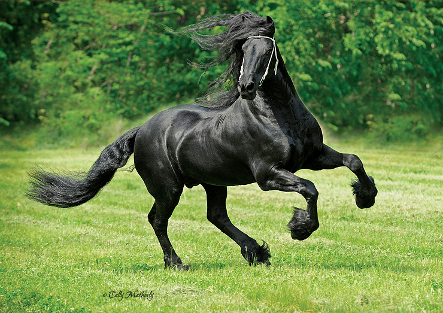

Nightshade Stables
Rembrandt NE
2005 16.3 hand Black Friesian Stallion
Competing in Prix St. Georges Dressage
| Fabe 348 | Melle 311 | Frans 289 |
| Woltje | ||
| Kee | Romke 234 | |
| Hilja | ||
| Olch | Feitse 293 | Daphne |
| Jochem 259 | ||
| Lysebet | Naen 264 | |
| Namke |
Rembrandt NE was destined for success at an early age, when he captured the attention of many in the small town where he was born. His poise and grace gave him a very somber and regal air, which is the cornerstone of his personality. Dressage is not just occasional work for Rembrandt NE: It is something that flows through him. His penchant for learning has propelled him forward in his career and allowed him to quickly master intricate movements. Additionally, his serious nature has made him an ideal dressage competitor, and a favorite at home. A certain gentility exists in Rembrandt NE, and his presence often calms some of his more unruly stablemates. One rarely finds him in anything other than his serious mood, although Rembrandt NE has been known to enjoy a roll in the grass from time to time! This usually occurs in a private area of the pasture, for he seems to know that he has a reputation to uphold at home and abroad.
A successful dressage career took root in 2011 when Rembrandt NE first entered the show arena. He has steadily climbed the ranks, while consistently demonstrating his signature poise and grace. True to his form, he often leads team events like pas de deux and quadrille. Rembrandt NE has many years of competition left, and his future success appears to have no limitations. Dressage will continue to be a way of life for this spectacular horse.
Career Highlights
- 2013
- Champion in Third Level Dressage at the LaVistel September Dressage Classic
- Champion in Third Level Dressage at the LaVistel September Dressage Classic
- Champion in Third Level Dressage at the 2013 DDF Ocean Breeze Dressage
- Reserve Champion in Third Level Dressage at the LaVistel June Dressage Classic
- 2012
- Champion in Second Level Dressage at the 2012 DDF Hallow's Eve Event
- Champion in Junior Dessage Horses In-Hand at the Silvertwine Dressage Show
- Champion in Young Dressage Horses at the 2012 DDF Queen Victoria Cup
- Reserve Champion in Third Level Dressage at the 2012 DDF St. Nikolas Dressage
- Reserve Champion in Second Level Dressage at the LaVistel October Dressage Show
- Reserve Champion in Second Level Dressage at the Paisley Dressage Classic III
- Reserve Champion in Second Level Dressage at the 2012 DDF Cool Down Cup
- Reserve Champion in Training Level Dressage at the LaVistel March Dressage Show
- Reserve Champion in Equitation at the LaVistel February Dressage Show
- 2011
- Best Five Year Old Suitability Horse at the White Willow Dressage Challenge Finale
- Champion in Training Level Dressage at the Renaissance October Kickoff Show
- Champion in Introductory Level Dressage at the White Rose Dressage Show
- Reserve Champion in In-Hand at the White Willow Dressage Challenge Show III
Photo Gallery
|  | |||
 |